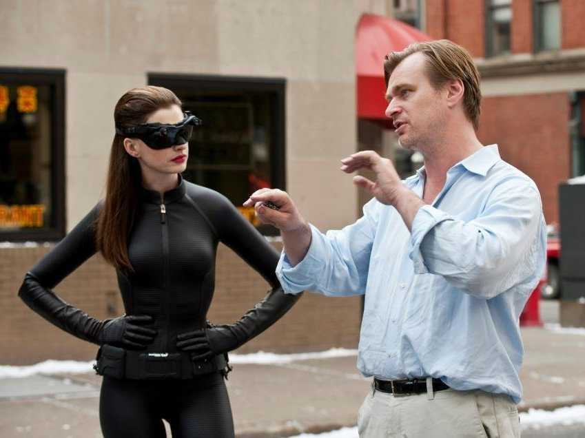

The Dark Knight Rises แบทแมน อัศวินรัตติกาลผงาด
เนื้อเรื่อง
เแปดปีหลังจากเหตุการณ์ในแบทแมน อัศวินรัตติกาล เมืองก็อทแธมกลายเป็นเมืองที่สงบ ด้วยอำนาจจากกฎหมายเดนท์ ทำให้ผู้บัญชาการตำรวจเจมส์ กอร์ดอนสามารถกำจัดองค์กรอาชญากรรมและอาชญากรรมที่รุนแรงได้ หากแต่กอร์ดอนยังคงรู้สึกผิดกับการปกปิดสิ่งที่ฮาร์วีย์ เดนท์เคยทำ เขาตั้งใจที่จะเปิดเผยแผนการปกปิดในงานเลี้ยงที่จัดเพื่อเป็นเกียรติกับเดนท์ แต่ตัดสินใจที่จะยังไม่บอกเพราะคิดว่าเมืองนี้ยังไม่พร้อมจะรับรู้ความจริง ระหว่างการติดตามเบาะแสคดีลักพักตัว ส.ส. จากงานเลี้ยงก่อนหน้า กอร์ดอนถูกลูกน้องของเบนจับตัว สุนทรพจน์ที่กอร์ดอนเตรียมไว้เพื่อเปิดเผยความจริงจึงตกไปอยู่ในมือของเบน เขาสามารถหนีมาได้แต่ถูกยิง ขณะอยู่ในโรงพยาบาล กอร์ดอนเลื่อนขั้นให้เจ้าหน้าที่สายตรวจจอห์น เบลคขึ้นเป็นนักสืบ และให้เบลครายงานขึ้นตรงต่อเขา
8 ปีแล้ว ที่แบทแมนได้หายตัวไปยามราตรี เปลี่ยนจากวีรบุรุษกลายเป็นนักโทษหลบหนี เขายอมเสียสละทุกอย่างและยอมให้ตกเป็นต้นเหตุการตายของอัยการเขต ฮาร์วี่ เดนท์ ก็เพื่อสิ่งที่เขากับอธิบดีกอร์ดอนเห็นว่าเพื่อประโยชน์อันยิ่งใหญ่กว่า

ทุกอย่างดูสงบสุขได้สักระยะหนึ่ง เมื่ออาชญากรรมต่างๆ ในเมืองก็อทแธมถูกบดขยี้ด้วยกฎหมายต่อต้านอาชญากรรมของเดนท์ จนกระทั่งการมาถึงของ "นางแมวป่า" จอมเจ้าเล่ห์ที่มีแผนการลึกลับของตัวเอง แต่ที่อันตรายยิ่งกว่านั้นก็คืออาชญากรรายใหม่ "เบน" ผู้ก่อการร้ายสวมหน้ากากที่จะสร้างความหายนะต่อก็อทแธม เพื่อต้อน "บรู๊ซ เวย์น" ให้ออกมาจากการเนรเทศตัวเอง ก่อนจะเข้าสู่การจลาจลครั้งยิ่งใหญ่
การผลิตและกำกับ
แบทแมน อัศวินรัตติกาลผงาด (The Dark Knight Rises) เป็นภาพยนตร์ซูเปอร์ฮีโร่จากการ์ตูนชุดมนุษย์ค้างคาว มีกำหนดการเข้าฉาย 20 กรกฎาคม ค.ศ. 2012 เป็นภาพยนตร์ภาคที่สาม และภาคสุดท้ายในไตรภาคมนุษย์ค้างคาวที่กำกับโดยคริสโตเฟอร์ โนแลน ต่อจากภาพยนตร์เรื่องแบทแมน บีกินส์ (Batman Begins, 2005) และแบทแมน อัศวินรัตติกาล (The Dark Knight, 2008) กำกับภาพยนตร์โดย คริสโตเฟอร์ โนแลน เขียนบทโดยตัวโนแลนเองและโจนาธาน ผู้เป็นน้องชาย นำแสดงโดยคริสเตียน เบล, ไมเคิล เคน, แกรี่ โอลด์แมน, และมอร์แกน ฟรีแมน ข้อมูลที่เปิดเผยออกมาระบุว่า เนื้อเรื่องของภาคนี้จะดำเนินต่อจากภาคอัศวินรัตติกาลเป็นเวลา 8 ปี และจะมีตัวร้ายหลักคือเซลีนา ไคล์ และเบน (นำแสดงโดยแอนน์ ฮัทธาเวย์ และทอม ฮาร์ดี้ )